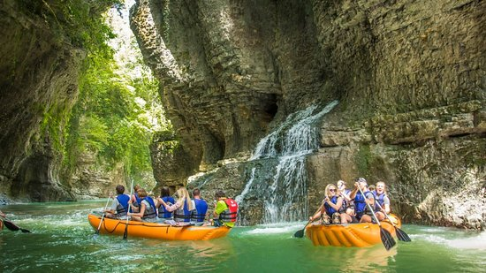

About Martvili Canyon
Martvili Canyon, located in the Samegrelo region of Georgia, is a natural wonder known for its breathtaking views, crystal-clear waters, and lush greenery. Visitors can enjoy boat rides, hiking, and exploring the serene environment.
Activities
- Boat rides through the canyon
- Hiking trails
- Swimming in natural pools
- Photography 